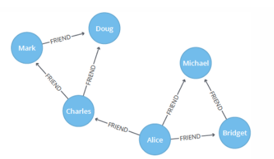
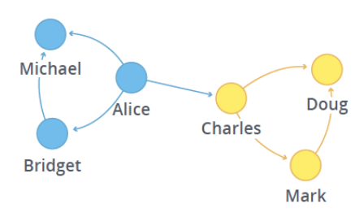
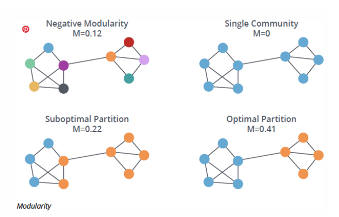
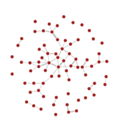
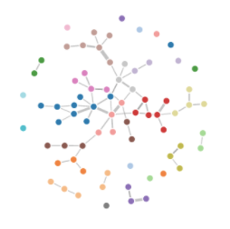
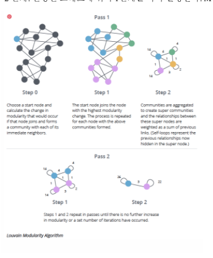
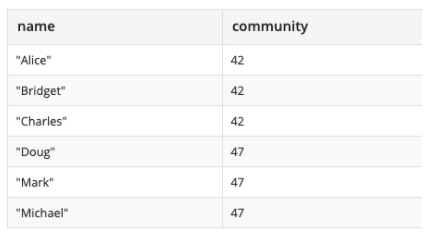
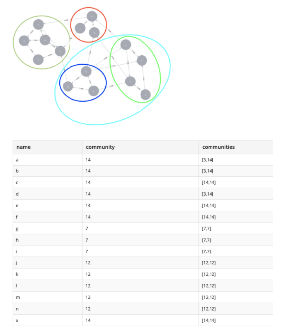

목적
친구 그룹에 각 유저 당 5명 이상(가능한 많은)의 친구가 포함되면 좋겠다.
소개
가능한 많은 친구연결 수를 가지기 위해서는 주간그룹안의 친구 관계 수를 숫자로 표현 할 수 있어야 한다.
주간 그룹이 20명이고 각각이 모두와 친구관계일 경우 1인당 20명 친구 관계(1 * 20) * 20 명 = 400개의 관계가 있으면 가장 높은 수이다. 친구의 링크를 따라가는 방식으로 구현하면 1 인당 1명의 친구를 포함 할 수 있고 1 인당 1명 (1 * 1) * 20 명 = 20개의 관계를 보장 할 수 있다. (min 값이다)
문제 정의
소셜에서 부분 커뮤니티(그룹)를 찾는 문제는 잘 정의되어 있고 관련 알고리즘도 많다. (이하 그룹을 커뮤니티로 표기) 유저 간 친구 관계는 순환 그래프로 표현될 수 있다.

친구 관계 수가 높은 그룹을 찾는 것은 그래프에서 관계가 촘촘한 커뮤니티를 찾는 것과 유사하다. 
평가 기준 (Modularity)
그래프에서 커뮤니티를 찾는 방법은 여러 개가 있다.[1] 그 중 노드의 밀집과 관련되어 널리 사용하는 Modularity 를 기준을 알아보자. (이하 M 으로 표기) M은 [-1/2, 1]의 숫자 값을 갖는다. -1/2는 가장 나쁘고 1이 가장 좋다. 그룹 안에서는 연결의 밀도가 높고 다른 모듈과는 연결의 밀도가 낮을 수로 1에 가까운 값을 갖는다. 
알고리즘 (Louvain)
M 을 기준으로 최대화 하는 알고리즘의 종류는 많다. 여기서는 많은 그래프 라이블러리에서 사용하는 Louvain_modularity 알고리즘을 알아보자. 탐욕 알고리즘이며 O(nlog^2n)의 시간복잡도를 가진다. 자바스크립트 구현체도 존재한다. (Neo4j 구현체도 존재) 아래와 같은 노드와 링크를 input 으로 주면

노드에 각각의 커뮤니티 숫자를 추가해 output 으로 준다.

알고리즘 상세
해당 알고리즘은 최초 각각의 노드를 다른 커뮤니티로 배정한다. 알고리즘은 2단계로 이루어져 있다. - 1 단계. 모든 노드에 대해서, 자기와 연결된 각각의 노드의 커뮤니티에 참여 할 경우의 M값들을 계산한다. 그 중 M 값을 가장 높여주는 커뮤니티에 참가한다. (현재보다 값이 증가하지 않으면 참여하지 않는다) - 배정된 커뮤니티를 모두 합쳐 한 개의 노드로 만든다. 커뮤니티간의 연결은 합쳐서 가중치를 가진 한개의 링크로 만든다. - 2 단계. 변경된 그래프에 위의 1단계를 다시 실행한다. M이 증가하지 않으면 멈춤다.

커뮤니티 숫자 맞추기
방법1. 단순히 결과에서 20명 마다 자르기

방법2. 커뮤니티 병합 기록을 사용하기

커뮤니티를 병합하고 해당 기록을 남기기 때문에 알고리즘이 완료된 후 특정 인원 만큼의 커뮤니티로 분리 할 수 있다. 아래와 같이 최종적으로 3개의 커뮤니티 (어두운 녹색(7), 빨강(12), 파랑(14)) 로 분리될 경우 파랑으로 합쳐지기 전의 기록이 남는다. 파랑 커뮤니티가 인원 수를 넘는 다면 이전 커뮤니티(3, 14)을 분리해 사용 할 수도 있다.
링크
- https://en.wikipedia.org/wiki/Modularity
- https://neo4j.com/docs/graph-algorithms/current/algorithms/louvain/
- https://neo4j.com/blog/graph-algorithms-neo4j-louvain-modularity/
- http://arxiv.org/abs/0803.0476
- https://en.wikipedia.org/wiki/Modularity_(networks)#cite_note-3
- https://en.wikipedia.org/wiki/Louvain_modularity
- https://en.wikipedia.org/wiki/Louvain_modularity